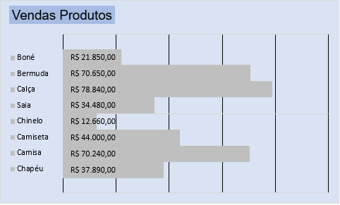
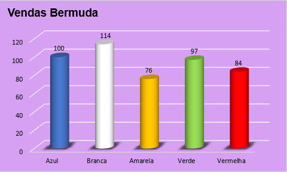
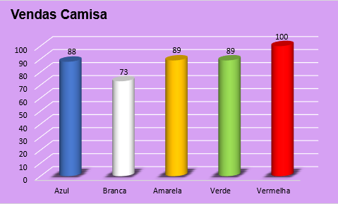
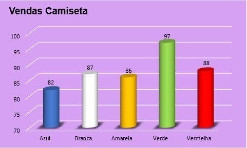
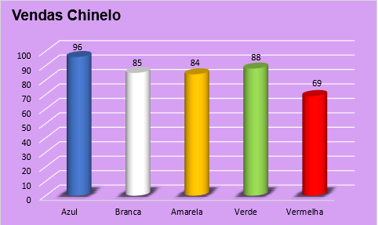

A tabela contém informações fictícias de uma loja de roupas. O objetivo aqui é mostrar, usando gráficos, como foi organizado as informações para identificar as melhores e piores vendas.
Resultados do Tratamento de Dados

Usando o Gráfico de Casacata,a ordem dos valores foi ordenado usando “Classificar e Filtrar”, a quantidade de produtos vendidos por cada vendedor(a).

Gráfico de barras, contendo o total faturado por cada vendedor(a). Uma cor mais clara no fundo para destacar a cor mais escura que está responsável pela informação principal

Formado pelo gráfico de barras, contendo o total faturado por cada item, um destaque para as cores, uma cor mais clara no fundo para destacar a cor mais escura que está responsável pela informação principal.

O gráfico, Vendas de Bermudas, é formado pelo gráfico de colunas, contendo o total de item vendido e cada coluna é representada pela cor de cada Bermuda vendido e melhorando na visualização.

O gráfico, Vendas de Bonés, é formado pelo gráfico de colunas, contendo o total de item vendido e cada coluna é representada pela cor de cada Boné vendido e melhorando na visualização.

O gráfico, Vendas de Calças, é formado pelo gráfico de colunas, contendo o total de item vendido e cada coluna é representada pela cor de cada Calça vendido e melhorando na visualização.

O gráfico, Vendas de Camisas, é formado pelo gráfico de colunas, contendo o total de item vendido e cada coluna é representada pela cor de cada Camisa vendido e melhorando na visualização.

O gráfico, Vendas de Camisetas, é formado pelo gráfico de colunas, contendo o total de item vendido e cada coluna é representada pela cor de cada Camiseta vendido e melhorando na visualização.

O gráfico, Vendas de Chapéus, é formado pelo gráfico de colunas, contendo o total de item vendido e cada coluna é representada pela cor de cada Chapéu vendido e melhorando na visualização.

O gráfico, Vendas de Chinelos, é formado pelo gráfico de colunas, contendo o total de item vendido e cada coluna é representada pela cor de cada Chinelo vendido e melhorando na visualização.

O gráfico, Vendas de Saias, é formado pelo gráfico de colunas, contendo o total de item vendido e cada coluna é representada pela cor de cada Saia vendido e melhorando na visualização.